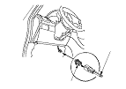

Navigation System Forced Starting of Display
Starting Procedure
Special Tools Required
SCS service connector
07PAZ-0010100
Connect the SCS service connector (A) to the navigation service check connector (B) located under the dash.
Turn the ignition switch ON (II).
Check that the system starts up and then changes to the ‘‘Navi System Link'' screen.
Remove the SCS connector.
NOTE: If the system fails to display the ‘‘Navi System Link'' screen, refer to
no picture is displayed.
